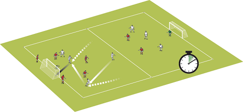

Transition success
In the professional game there are around 200 turnovers of the ball in every match,
so players need to practice how to deal with them.
Reacting to turnover balls is vital at youth level because often teams are switched off to the positives and negatives.
Why join it
This session is about counter-attacking, transition and players rotating in their positions.
Attackers practice good link up play and fast paced combinations and decision making. Defenders work against overloads.
Set up the activity
You need balls, bibs, cones and goals. Set up a 60 x 40 yard area split into two halves with goals at each end.
We’ve used 16 players in this session plus a server
How to play it
Split your players into two equal teams of 8 players. There should be 3 defenders and a goalkeeper in the team’s half with 2 attackers in the other half.
The other 2 attackers start either side of their own goal.
To begin the two attackers next to the goal pass to one of the two attackers in the other half of the pitch, then support their team mates and create a 4v3 overload.
Attackers have 10 seconds to score. IF no goal is scored in this time possession is overturned and the other team goes.
Technique
Transitioning from attacking to defending and reorganising quickly to cover the change – positional sense and tactics are key here.
 1. Play starts with the attackers beside their goal – encourage your players to show high tempo and intent to score a goal
1. Play starts with the attackers beside their goal – encourage your players to show high tempo and intent to score a goal
2. The attackers play a ball to a team mate in the other half of the pitch and follow the pass.

3. Teams have 10 seconds to score if they don’t score the other team gets possession
4. Players must try to combine and score using the
4v3 overload in their favour
5. Here the opposition attack begins in the opposite direction